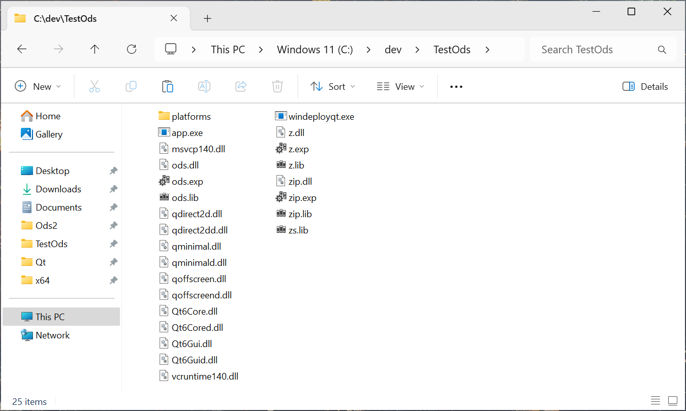

How to build with Visual Studio 17 2022 on Windows:
Update the "setup_windows_env.bat" file with proper values for your build environment.
Use "cmd.exe" to execute "setup_windows_env.bat", then
mkdir build
cd build
cmake -DCMAKE_BUILD_TYPE=Release ..
It will create many files, among which Ods2.sln (if built for Visual Studio).
Open Ods2.sln using Visual Studio
Make sure it's in Release Mode: From the Build menu, select Configuration Manager
and choose Release.
First build "zlib", then (lib)"zip", then "ods" and, if you want to build
the examples, "app".
The output is in $Ods2/build/lib, possibly in a subfolder like "Release" or "Debug".
The needed files are ods.dll, z.dll (zlib) and zip.dll
On the screenshot one can see what the "examples" (built as "app.exe")
together with all needed .dll files looks like.
The "platforms" folder contains "qwindows(d).dll"

The build instructions were inspired from
https://doc.qt.io/qt-6/windows-deployment.html